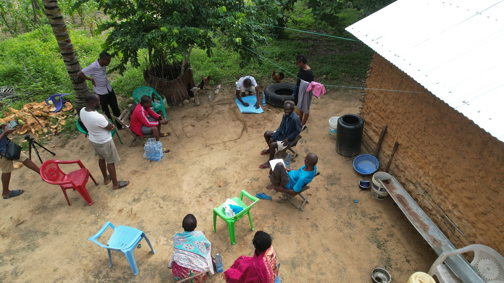
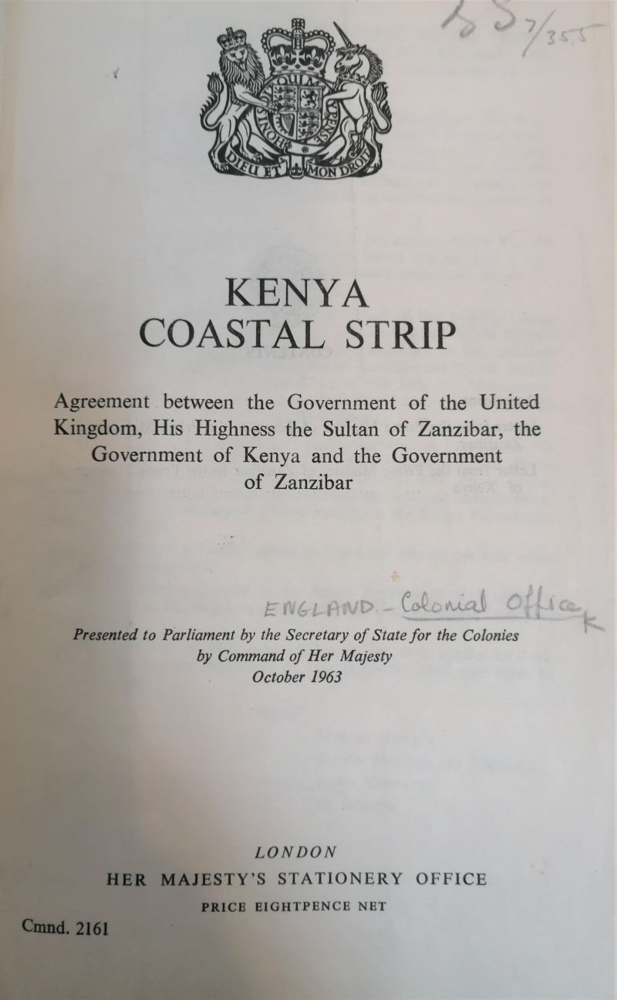
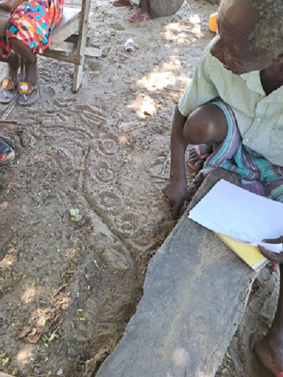
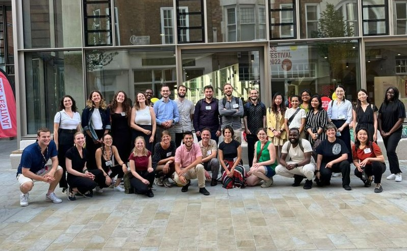

Journey into the Heart of Kisiwani Island

As i prepared myself for a mini participatory mapping exercise with the village elders in Kisiwani Island, Kilifi, it dawned on me that the more i interact with the community, the more i have to re-learn so much!I barely introduced myself to them and they already took their drawing sticks and jumped right into it. They are walking google maps and spatial repositories!Shortly afterwards, i was struggling to catch up with them as they drew their territory with so much precision and consultation with each other. At somepoint even a chicken joined in to help map the island. I am so greatful to Pieter the drone guy for amazing captures and overviews. Over and above all, i want to thank the community elders of Kisiwani Island for letting me in their beautiful territory and their world view. I also thank @IFRA Nairobi and in extention @Dr Cleila Coret and @Dr Francesca de Matteo for the fieldwork grant to enable this mini-workshop with the community!I am excited to soon launch the short animated mapping documentary that tries to capture the dwelling cultures of the Kisiwani island inhabitants!
Unearthing the Spatial Violence
.jpg)
During one of my Iterative fieldwork, I encountered this signboard along the Kilifi-Malindi highway. This is just one of the many mushrooming signboards alerting market forces LAND FOR SALE! When I look at this board, I become emotional and sad as an urbanist about the ongoing Spatial Violence that is repeatedly inflicted on the indigenous communities. And this is one but many forms of Spatial violence that consciously or subconsciously we as professionals propagate. With a stroke of a pen, the black lines of subdivisions shown on the board, obliterate the lived territories of the Indigenous(local) peoples inhabiting the territory, imposing new geographies and borders, that don't necessarily favor them. This board represents a longer genealogy of spatial violence embedded in an imposed and ontologically biased spatial representation that institutes spatial restrictions that further fracture disparate forms of livelihoods, meanings, and attachment to territories, accelerates de-commonisation of commons, and eventually leaves the inhabitants more vulnerable than before. Until we carefully and thoughtfully confront this cancer eating up our territories, we should forget about building sustainable communities and livelihoods, building on adaptation to climate change, and any other hopium that comes to your mind.
So next time you see such a signboard nearby you, have this in mind.
Cartographic Manipulation and Colonial Legacies

Last summer, after spending hours and hours in the famous British Library, I stumbled upon some interesting former colonial office records in the maps section. As a Kenyan and from the '''bara'' (inland) as the coastal people would call it, I had a shaky understanding of Coastal Kenya's history. Only a bit of hearsay of the (in)famous Coastal Strip. It is one of the hotly contested topics that strongly dominate Coastal Kenya's history and a splendid example of the political agency that maps pertain to.
But what is this line? what about it brings about a very sensitive and delicate matter to the foreground? The narrative goes on something like this;
In 1908, the British established an artificial boundary called the Baratum Line to legally separate ''Arab'' and ''Asian'' landowners from the African ''squatters''. This was later then popularly known as the ''Ten Mile Strip''. The line would emanate from the immediate coast and 10 miles inland. With the indirect rule doctrine of the British colonial administration, this was a way to legally recognize the Sultan of Zanzibar dominions under the British Protectorate. This line would later prove to be problematic as it created and erased different realities at the same time, and mostly in the favor of the ''non-native'' communities. It created cartographic invisibility of the Wa-nyika tribes, which would later be known as the Mijikenda tribes, in the sense that some of them were living within the 10-mile jurisdiction, and could no longer be allowed and eventually expelled to the inland. The Baratum line institutionalized, legitimized, and rationalized land displacement and only created more animosity between all the communities living in the coastal area. The rest is a history of numerous historical land injustices, the emergence of separatist groups, and a lost narrative that can barely be discussed. And this is only one case demonstrating maps are not apolitical, their agency and power are in the hands of the authors. Think about that when you prepare or read one next time.
Reimagining Participatory Cartography

During my recent fieldwork to one of the islands around Mida creek area,Watamu,Kenya, i was buffled by something. I took a step back and had a critical reflection of my position as a researcher especially from 'global south' as we say but fundamentally trained in a western based education system. Does it embedd some biasness in me? After preparing my data collection instruments and diving deep into my critical mapping debates, i realized i detached myself from the context i claim to critically map. I had with me a set of guiding questions and a blank A4, hoping that the persons i interview would sketch out their mental maps. This would then help me to capture and understand the spatialities of the indigenous/local communities living in and around the eco-sensitive Mida creek Area. I started to realise some hesitation of almost everyone i engaged to draw on the blank A4 despite their rich knowledge of their territory. Until one elderly man took a stick and drew on the ground with so much precision and articulation. It made me wonder of the maps and plans we draw and whom we draw it for. What if we cascaded Spatial Planning projects to such levels of understanding?What if we made maps with them like this and capture the temporality like this?wouldn't that be a more embedded participatory approach?
Decolonizing Urbanization

More often than not, we speak about Urbanization and its mechanisms. How we desire to grow, the spatial frameworks we adopt, and the high modernistic aspirations. But do we stop to think about how we ACTUALLY supposed to understand our growth, do we stop to understand Spatial transformations happening around us? Do we realize or acknowledge the struggles subaltern groups face in positioning themselves in these spatial transformations and shifting landscapes? When we make maps and the mapping process, does it conform to the spatialities of those whom we draw for? Is it embedded in the realities of those we plan for? All these are questions meant to provoke a deeper reading and meaning to the territory we live and work in. Especially to the Urbanists founded and working in the ''Global South''. We have a bigger assignment to go against the grain and develop a language that is embedded in our societies. Not an exercise of conforming to other standards, but developing our own standards and meaning that are context-specific and relevant to the challenging realities.
I try to do this in my small ways within my PhD work. But much more needs to be mobilized and we start understanding things differently. It was a pleasure to present my paper on the ''Agency of Mapping in Coastal Kenya Rapidly Transforming Context'' in the LSE Shifting Landscape Conference 2022.